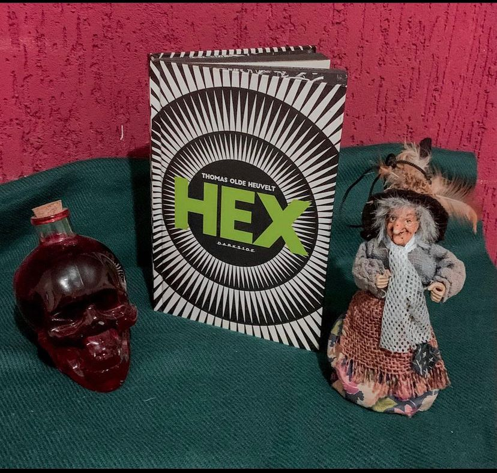

HEX
(Thomas Olde Heuvelt - Darkside)
⭐⭐⭐⭐
BRUXARIA e HISTERIA COLETIVA são palavras que eu usaria para descrever “HEX” obra escrita pelo holandês Thomas Olde Heuvelt , lançada pela Darkside em uma edição belíssima digna de nota. Aqui vamos acompanhar a história do dia a dia da cidadezinha de Black Spring, um pacato vilarejo que esconde um segredo: eles escondem uma bruxa de verdade do resto do mundo! Katherine Van Wyler foi condenada à fogueira mas, ela não morreu e continua rondando a cidade por mais de trezentos anos. Os olhos e boca foram costurados e os moradores de Black Spring controlam seus passos através do HEXApp, um aplicativo de celular, 24 horas por dia. Enquanto essa paranóia só aumenta na cidade, adolescentes resolvem desafiar as regras para descobrir se a bruxa realmente é perigosa.
Thomas Olde Heuvelt usou na sua narrativa o clássico do terror: caça às bruxas, cidade pequena e o clima de tensão, porém agora com um novo elemento, a tecnologia e é bem interessante o rumo que tudo isso misturado vai tomar durante a narrativa.
A impressão de que a todo momento algo vai acontecer só cresce e nos fazemos a pergunta : Será que a Bruxa é realmente perigosa ou tudo isso faz parte apenas de um inconsciente coletivo?
O Hexapp, aplicativo de monitoramento da bruxa tem como função colocar a tecnologia presente no nosso dia a dia à serviço do monitoramento daquele que é o objeto de medo da cidade. Toda ferramenta usada pelo autor faz com que a ficção se aproxime da nossa realidade e dão a trama um fio condutor para que a narrativa se desenvolva. O horror psicológico construído de forma muito bem elaborada é a cereja do bolo.
Devo adiantar que é bem difícil simpatizar com qualquer personagem da trama apesar de serem bem construídos e de alguma forma até os “toleráveis” acabam tomando atitudes questionáveis que vão fazer com que em algum momento da trama você sinta ódio.
Senti falta de uma exploração maior da história de Katherine Van Wyler, talvez por isso a narrativa faz com que a gente se pergunta: Será que toda essa “caça às bruxas” se dá apenas pelo fato de ela ser uma mulher diferente?